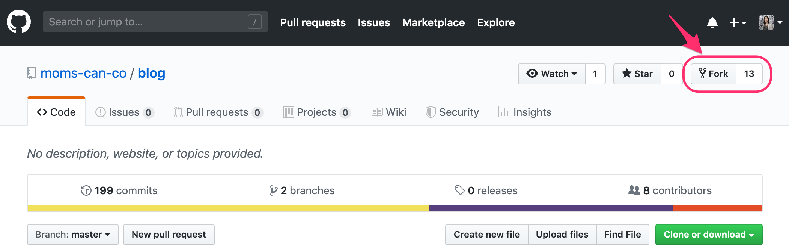
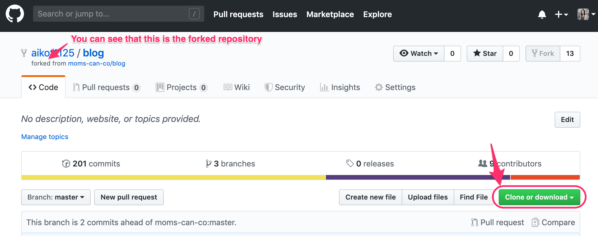
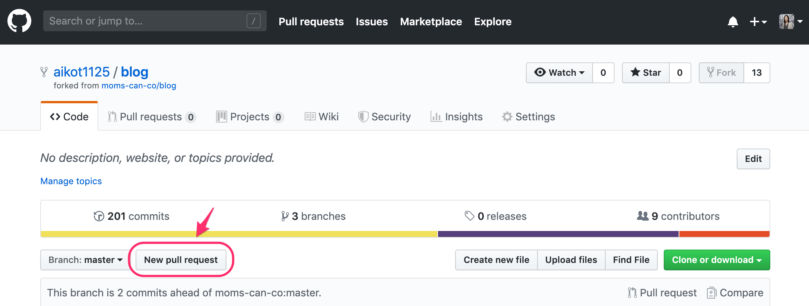

A Quick Beginner's Guide to Git and GitHub - The What and The How
If you want to collaborate with others in coding, it's difficult to avoid Git and GitHub. But what are they and what's their relationship? How can you start collaborating? If you are completely clueless, then this post is for you!
Up until a few weeks ago, I had no clue what Git and GitHub were. Perhaps just like you. They have the same word 'git', so are they the same thing? I recognize that cat character from GitHub but what does the platform do? I had so many question marks back then.
Honestly speaking, I am no where near an expert in Git or GitHub yet. However, as a very recent learner I will explain in simple words the WHAT and the HOW of Git and GitHub so you won't feel so intimidated! Please note that I will not go into too much detail to keep things simple. For any additional resources you can refer to the links I have shared within this post.
What is Git and GitHub?
So Git and GitHub, are they the same thing? Short answer is, no! So how are they different?
Git is a type of version control system (VCS) that lets you track the history of your code as you and your team collaborate
on projects together. It also allows each developer to work locally on their computer and later merge them together as one master code. There are actually many variations of VCS similar to Git which you can learn more
here. Out of those, Git is the one you hear most often because it is one of the most used systems in the world, and also one which GitHub is built on.
Then what is GitHub? GitHub is a social platform that hosts Git coding projects. It hosts the largest amount of open source projects and its social features allow you to collaborate with other developers. Similar
to Git, keep in mind that although you hear a lot about GitHub, they are not the only code hosting platform. You can learn more about other platforms here.
How do you use Git and GitHub?
So let's say you want to try using Git and GitHub. Where and how do you start?
The initial step is to install and set up Git on your local computer and create a GitHub account. To connect the two, the next step is to authenticate with GitHub from Git.
These links provide a very detailed step by step guide, so I will instead focus on how you can start collaborating with others using Git and GitHub.
Let's start with the basic terms you should start to familiarize
yourself with, which I listed below. These are not by all means comprehensive, but a good place to start without overwhelming you! There are always resources such as the Git Cheat Sheet whenever you want to know more.
Basic Git Terms
| Term | Definition |
|---|---|
| repository | Place to store your data including codes, texts and edit histories |
| remote repository | A repository located on the server |
| upstream repository | A remote repository that stores the master branch. This is the main repository where all of the individual code edits will eventually merge into. |
| local repository | A repository located on your local computer (meaning not connected to the web) |
| clone | Act of duplicating the remote repository to your local computer |
| branch and master | For any code there is one master branch. Edits by each developer are typically made on separate branches so that everyone can work on the code at the same time. These branches will then merge into the master branch. |
| checkout | Allows you to move to a different branch |
| add and commit | After you make any type of edits on your branch, you will save your edit history through the act of 'adding' and 'committing'. |
| push | Act of reflecting your committed edits from the local to the remote repository |
| origin | refers to the remote repository which you will push your commits to |
Basic GitHub Terms
| Term | Definition |
|---|---|
| pull request | Once you push your committed edits to the remote repository, you will conduct a pull request to the upstream repository so that your edits can be reviewed by other team members. When the pull request is accepted, your edits are reflected to the upstream repository. |
| fork | Act of duplicating the remote repository within GitHub |
Using these basic terms, I will explain step by step what to do when you want to collaborate on a GitHub repository that someone else has created.
- Fork
Fork your own copy of the upstream repository to your GitHub account (This fork will become your 'origin' repository)  - Clone
Clone the forked repository to your local computer by first copying the remote URL of either HTTPS or SSH, whichever you chose when you authenticated with GitHub from Git.  Then open the Terminal (for Mac users) or Git Bash (for Windows users) and type this command:
$ git clone [remote URL you copied from GitHub]
Note that the square brackets are there for guidance and is not necessary to be typed in. This will create a copy of the repository on your local desktop. - Create branch
In the cloned repository on your local computer, initially you will be on the master branch. Developers typically do not make edits directly on the master but instead create their own branch and merge later with the master. Therefore you should create a new branch using this command:$ git branch [branch name]
In order to switch from the master branchto your own branch, you will type this command:$ git checkout [branch name] - Add, commit and push
Once you have made your edits in the text editor (such as Atom, Sublime or Visual Studio Code), you will add, commit and push your local branch to the origin repository. The three commands you need are:
$ git add [file name]
$ git commit -m "add new file"
(For commit, it is best practice to add a message for your collaborators in parenthesis that describes the edit you have made)$ git push origin [branch name]
(This command pushes the committed edits made on your local branch to your forked 'origin' repository in GitHub) Note that this 'origin' repository is still your own forked copy so you need to request the edits to the upstream repository and get them approved by theowner. - Pull request
In order to request the edits to the upstream repository, go to GitHub and create a new pull request.  - Wait for approval
If your request needs any changes, the owner will ask for the code to be revised. If it looks good, it will be approved and your code gets merged to the master branch of the upstream repository! - Success!
Hooray, you've successfully collaborated on an open source project!
Though I've only scratched the surface, I hope this quick beginner's guide gave you a better understanding of what Git and GitHub are and how they work.
For further learnings, I recommend checking out the GitHub Learning Lab as a start. When you run into an error or a problem, there's always the Stack Overflow community which will most likely have your answers!
Thank you for taking the time to read this post, and good luck on your code collaboration journey!Aiko Takemura
After working in the advertising industry in Japan for 12 years, Aiko moved to the US to be with her loving family. She is currently a full time mom of an energetic 2 year old boy and expecting another wild one very soon. To fulfill her hunger for new learning, she currently immerses herself in coding at the Moms Can Code School with an aim to become a web developer.Learn Digital Skills
Find out when the next cohort begins!
The most comprehensive program to up your game in the remote career world.
Learn More